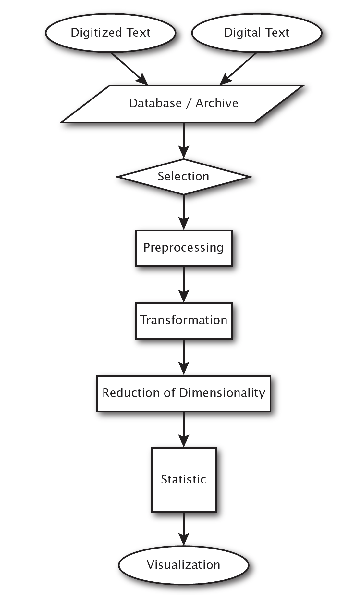

Critical Digital Humanities: The Search for a Methodology

Reviews and Blurbs
"Critical Digital Humanities is a well-researched, well-written, timely text and a vibrant articulation of the connections that exist between literary theory and the methods of the digital humanities."
--American Literary History
"Dobson provides a thought-provoking overview of critical views on digital humanities. He points repeatedly and with vigor at crucial aspects to consider when doing digital humanities in the tradition of literary criticism."
--Journal of Literary Theory
"Critical Digital Humanities is an important corrective to approaches that frame computational data as inviolable, unbiased, and essentially trustworthy. Dobson masterfully combines cultural theory with complex computational approaches and points to areas for further development by digital humanists looking to resist the slide toward scientism, remembering that they are, after all, humanists."
--Journal of Folklore Research
About Critical Digital Humanities:
I was delighted to have my book appear in the formative and field-influential "Topics in the Digital Humanities" series at University of Illinois Press edited by Susan Schreibman. It was published in 2019 and followed key texts on digital methods (Matthew L. Jockers's Macroanalysis: Digital Methods and Literary History (2013) and Stephen Ramsay's Reading Machines: Toward an Algorithmic Criticism (2011), both of which were subjects of critique in my book). In the 2010s there were few publishers interested in digital humanities work and this series was incredibly important to the growth of the field.
I wrote CDH to serve as both a meta-critical account of emergent methods in digital humanities (or really much more like what we are now calling computational literary studies, as a few reviewers have pointed out) and a walk through the "stack" of methods that might be used in a graduate or undergraduate course on the digital humanities. I organized the book as a traversal through typical workflows used in DH. I used my prior experience with designing, executing, and analyzing workflows for computational science in support of high-performance and grid computing as a way to ground the methods and choices made by investigators and researchers in the humanities. Once thes choices and transformations were articulated, I thought some of the book's major arguments would become apparent. Workflows are a key technology for reproducibility, a notable issue in many computational fields and one that will become increasingly important in the present era of deep learning and generative AI.
I created a series of workflows with GraphViz's dot language but the publisher preferred to re-create these drawings. The above image appears as "Figure 1.1" in the book. It describes a generic workflow for almost any computational activity that one would do with texts. I was slightly interested in the difference between the so-called born-digital digital and the digitized text, especially as I was trained as a nineteenth-century Americanist and worked with a variety of editions and representations of texts.
I wanted each chapter to move through problems highlighted by these workflow visualizations. The chapters move from thinking about layers of transformations to critical analysis (via my historicization of an algorithm) of a specific choice made at one layer: "Protocols, Methods, and Workflows: Digital Ways of Reading," "Can an Algorithm Be Disturbed? Machine Learning," "Intrinsic Criticism, and the Digital Humanities," "Digital Historicism and the Historicity of Digital Texts," and "The Cultural Significance of k-NN."
© Copyright by James E. Dobson